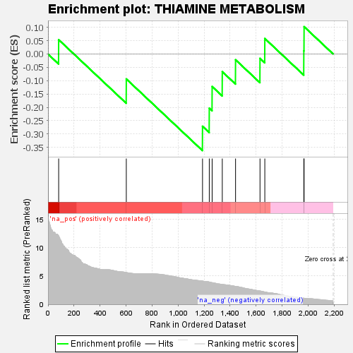
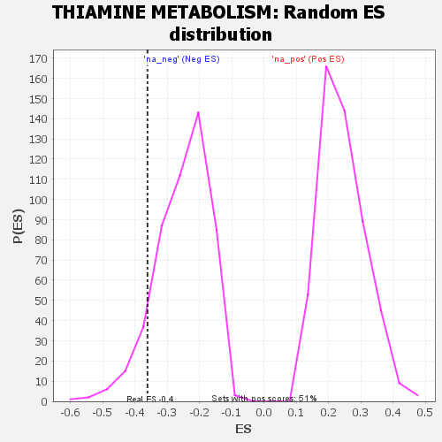

| | | Dataset | GSEA RNK clr Maaslin2 MucosalvsLuminal KO - ProximalColon.rnk |
| Phenotype | NoPhenotypeAvailable |
| Upregulated in class | na_neg |
| GeneSet | THIAMINE METABOLISM |
| Enrichment Score (ES) | -0.36171985 |
| Normalized Enrichment Score (NES) | -1.4346956 |
| Nominal p-value | 0.10183299 |
| FDR q-value | 0.300291 |
| FWER p-Value | 0.99 |
Table: GSEA Results Summary

Fig 1: Enrichment plot: THIAMINE METABOLISM
Profile of the Running ES Score & Positions of GeneSet Members on the Rank Ordered List

Fig 2: THIAMINE METABOLISM: Random ES distribution
Gene set null distribution of ES for THIAMINE METABOLISM